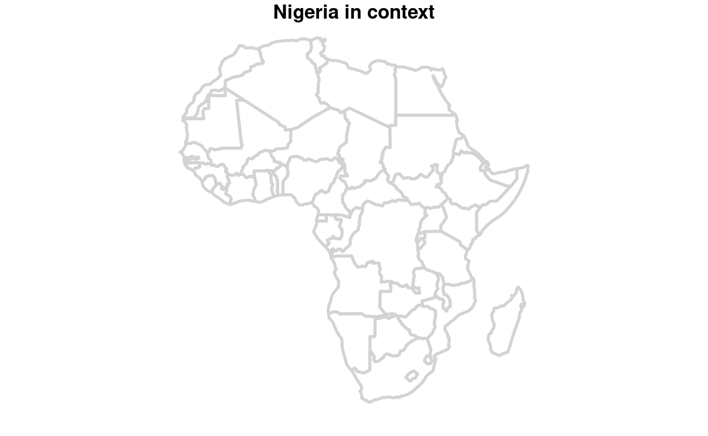
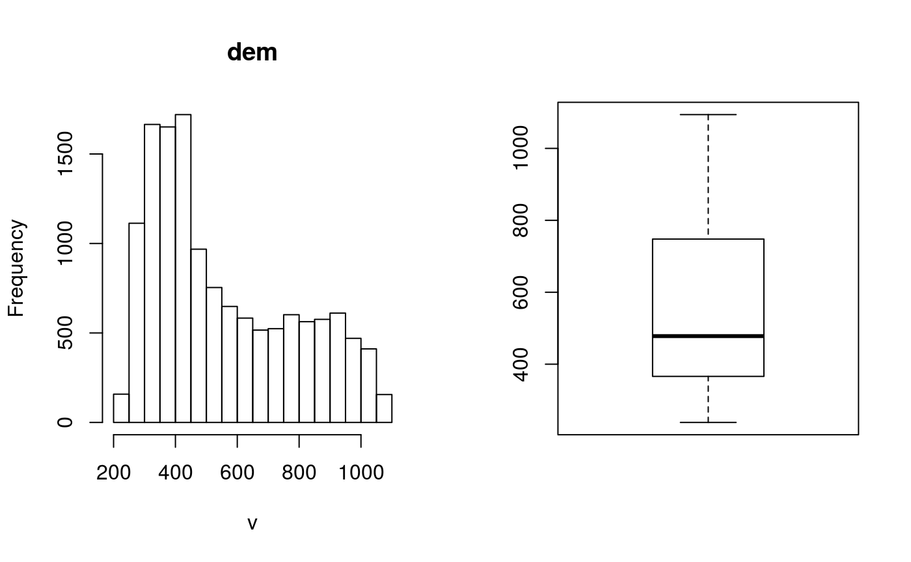
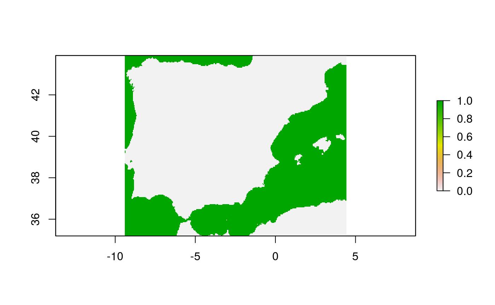
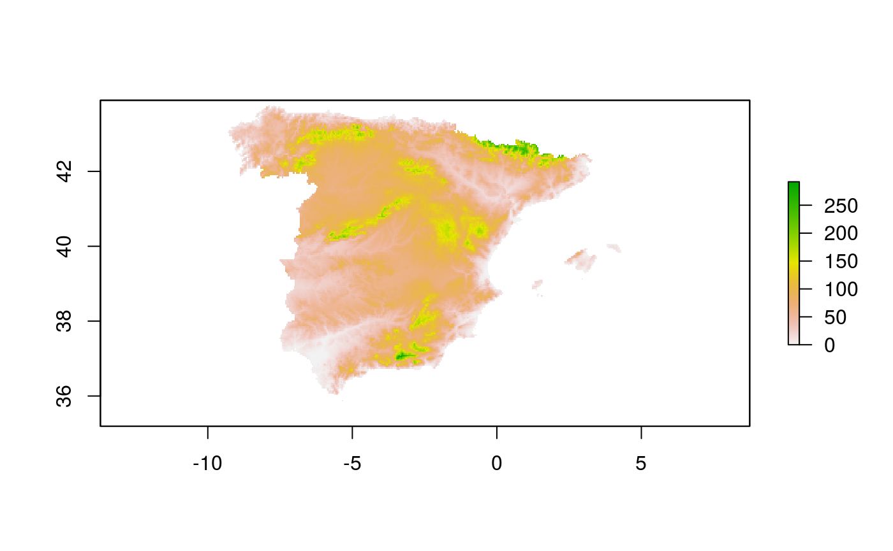

Geocomputation with R - Exercises and Solutions
Robin Lovelace, Jakub Nowosad, Jannes Muenchow
2018-08-13
Source:vignettes/solutions.Rmd
solutions.RmdPrerequisites
The solutions assume the following packages are attached (other packages will be attached when needed):
library(sf)
library(tidyverse)
library(spData)Chapter 1
Think about the terms ‘GIS’, ‘GDS’ and ‘Geocomputation’ described above. Which is your favorite and and why?
Provide 3 reasons for using a scriptable language such R for geocomputation instead of established GIS programs such as QGIS.
- Reproducibility: a sequence of operations is much easier to save and share when using a scripting language.
- Scalability: scripting languages make it easy to break-up the work and parallelise, making it more scalable.
- Flexibility: the building blocks of the language allows it to interface efficiently with external software, enabling R to perform a wide range of tasks (e.g. animations, online interactive maps).
- Efficiency: the GUI of GIS programs can be slow to use and install.
- Name two advantages and two disadvantages of using the older sp package compared with the new sf package.
-
+Number of packages supported. -
+Stability -
-Slow performance -
-Non standard data format
Chapter 2
- What does the summary of the
geometrycolumn tell us about theworlddataset, in terms of:- The geometry type?
- How many countries there are?
- The coordinate reference system (CRS)?
- Using sf’s
plot()command, create a map of Nigeria in context, building on the code that creates and plots Asia above (see Figure @ref(fig:asia) for an example of what this could look like).
nigeria = world[world$name_long == "Nigeria", ]
africa = world[world$continent == "Africa", ]
bb_africa = st_bbox(africa)
plot(africa[2], col = "white", lwd = 3, main = "Nigeria in context", border = "lightgrey")
# plot(world, lty = 3, add = TRUE, border = "grey")
plot(world, add = TRUE, border = "grey")
plot(nigeria, col = "yellow", add = TRUE, border = "darkgrey")
ncentre = st_centroid(nigeria)
ncentre_num = st_coordinates(ncentre)
text(x = ncentre_num[1], y = ncentre_num[2], labels = "Nigeria")

Map of Nigeria in context illustrating sf’s plotting capabilities
- What does the
cexargument do in theplot()function that generates Figure @ref(fig:contpop)?- Why was
cexpassed thesqrt(world$pop) / 10000instead of just the population directly? - Bonus: what equivalent arguments to
cexexist in the dedicated vizualisation package tmap?
- Why was
- Re-run the code that ‘generated’ Figure @ref(fig:contpop) at the end of @ref(base-args) and find 3 similarities and 3 differences between the plot produced on your computer and that in the book.
- What is similar?
- The map orientation (north is up), colors of the continents and sizes of the circles are the same, among other things.
- What has changed?
- The shape of the countries (an equal area projection has been used), the color of the points has changed (to red) and are now filled in (using the
pchargument to change the point symbol), the plot has graticules and (most subtly) the points are now in the centroid of the largest polygon of each country, rather than in the area-weighted centroid across all polygons per country.
- The shape of the countries (an equal area projection has been used), the color of the points has changed (to red) and are now filled in (using the
- Bonus: play around with and research base plotting arguments to make your version of Figure @ref(fig:contpop) more attractive. Which arguments were most useful.
- This is a subjective question: have fun!
- Advanced: try to reproduce the map presented in Figure @ref(base-args). Copy-and-pasting is prohibited!
- You can look at the code that generated the plot here: https://github.com/Robinlovelace/geocompr/blob/master/02-spatial-data.Rmd . If you memorise its important parts, and type them in your own script to reproduce the code that does not count as cheating. That will be a valuable learning experience.
- What is similar?
- Read the
raster/nlcd2011.tiffile from the spDataLarge package. What kind of information can you get about the properties of this file? Create an empty
RasterLayerobject calledmy_rasterwith 10 columns and 10 rows, and resolution of 10 units. Assign random values between 0 and 10 to the new raster and plot it.Exercise 3
- What does the
lwdargument do in theplot()code that generates Figure @ref(fig:africa). - Perform the same operations and map making for another continent of your choice.
- Bonus: Download some global geographic data and add attribute variables assigning them to the continents of the world.
Chapter 3
- Select only the
NAMEcolumn inus_statesand create a new object calledus_states_name. What is the class of the new object?
us_states_name = us_states %>% dplyr::select(NAME)
class(us_states_name)
#> [1] "sf" "data.frame"- Select columns which contain information about a total population. Think about as many ways as possible to do it. Hint: try to use helper functions, such as
containsorstarts_with.
us_states %>% select(total_pop_10, total_pop_15)
#> Simple feature collection with 49 features and 2 fields
#> geometry type: MULTIPOLYGON
#> dimension: XY
#> bbox: xmin: -124.7042 ymin: 24.55868 xmax: -66.9824 ymax: 49.38436
#> epsg (SRID): 4269
#> proj4string: +proj=longlat +datum=NAD83 +no_defs
#> First 10 features:
#> total_pop_10 total_pop_15 geometry
#> 1 4712651 4830620 MULTIPOLYGON (((-88.20006 3...
#> 2 6246816 6641928 MULTIPOLYGON (((-114.7196 3...
#> 3 4887061 5278906 MULTIPOLYGON (((-109.0501 4...
#> 4 3545837 3593222 MULTIPOLYGON (((-73.48731 4...
#> 5 18511620 19645772 MULTIPOLYGON (((-81.81169 2...
#> 6 9468815 10006693 MULTIPOLYGON (((-85.60516 3...
#> 7 1526797 1616547 MULTIPOLYGON (((-116.916 45...
#> 8 6417398 6568645 MULTIPOLYGON (((-87.52404 4...
#> 9 2809329 2892987 MULTIPOLYGON (((-102.0517 4...
#> 10 4429940 4625253 MULTIPOLYGON (((-92.01783 2...us_states %>% select(starts_with("total_pop"))
#> Simple feature collection with 49 features and 2 fields
#> geometry type: MULTIPOLYGON
#> dimension: XY
#> bbox: xmin: -124.7042 ymin: 24.55868 xmax: -66.9824 ymax: 49.38436
#> epsg (SRID): 4269
#> proj4string: +proj=longlat +datum=NAD83 +no_defs
#> First 10 features:
#> total_pop_10 total_pop_15 geometry
#> 1 4712651 4830620 MULTIPOLYGON (((-88.20006 3...
#> 2 6246816 6641928 MULTIPOLYGON (((-114.7196 3...
#> 3 4887061 5278906 MULTIPOLYGON (((-109.0501 4...
#> 4 3545837 3593222 MULTIPOLYGON (((-73.48731 4...
#> 5 18511620 19645772 MULTIPOLYGON (((-81.81169 2...
#> 6 9468815 10006693 MULTIPOLYGON (((-85.60516 3...
#> 7 1526797 1616547 MULTIPOLYGON (((-116.916 45...
#> 8 6417398 6568645 MULTIPOLYGON (((-87.52404 4...
#> 9 2809329 2892987 MULTIPOLYGON (((-102.0517 4...
#> 10 4429940 4625253 MULTIPOLYGON (((-92.01783 2...us_states %>% select(contains("total_pop"))
#> Simple feature collection with 49 features and 2 fields
#> geometry type: MULTIPOLYGON
#> dimension: XY
#> bbox: xmin: -124.7042 ymin: 24.55868 xmax: -66.9824 ymax: 49.38436
#> epsg (SRID): 4269
#> proj4string: +proj=longlat +datum=NAD83 +no_defs
#> First 10 features:
#> total_pop_10 total_pop_15 geometry
#> 1 4712651 4830620 MULTIPOLYGON (((-88.20006 3...
#> 2 6246816 6641928 MULTIPOLYGON (((-114.7196 3...
#> 3 4887061 5278906 MULTIPOLYGON (((-109.0501 4...
#> 4 3545837 3593222 MULTIPOLYGON (((-73.48731 4...
#> 5 18511620 19645772 MULTIPOLYGON (((-81.81169 2...
#> 6 9468815 10006693 MULTIPOLYGON (((-85.60516 3...
#> 7 1526797 1616547 MULTIPOLYGON (((-116.916 45...
#> 8 6417398 6568645 MULTIPOLYGON (((-87.52404 4...
#> 9 2809329 2892987 MULTIPOLYGON (((-102.0517 4...
#> 10 4429940 4625253 MULTIPOLYGON (((-92.01783 2...- Find all states that:
- Belongs to the Midwest region
us_states %>% filter(total_pop_15 < 750000)
#> Simple feature collection with 4 features and 6 fields
#> geometry type: MULTIPOLYGON
#> dimension: XY
#> bbox: xmin: -111.0552 ymin: 38.79165 xmax: -71.49392 ymax: 49.00069
#> epsg (SRID): 4269
#> proj4string: +proj=longlat +datum=NAD83 +no_defs
#> GEOID NAME REGION AREA total_pop_10
#> 1 38 North Dakota Midwest 183177.83 km^2 659858
#> 2 50 Vermont Norteast 24866.16 km^2 624258
#> 3 11 District of Columbia South 178.21 km^2 584400
#> 4 56 Wyoming West 253309.56 km^2 545579
#> total_pop_15 geometry
#> 1 721640 MULTIPOLYGON (((-104.0487 4...
#> 2 626604 MULTIPOLYGON (((-73.34312 4...
#> 3 647484 MULTIPOLYGON (((-77.11976 3...
#> 4 579679 MULTIPOLYGON (((-104.0577 4...- Had a total population in 2015 lower than 750,000 residents
us_states %>% filter(total_pop_15 < 750000)
#> Simple feature collection with 4 features and 6 fields
#> geometry type: MULTIPOLYGON
#> dimension: XY
#> bbox: xmin: -111.0552 ymin: 38.79165 xmax: -71.49392 ymax: 49.00069
#> epsg (SRID): 4269
#> proj4string: +proj=longlat +datum=NAD83 +no_defs
#> GEOID NAME REGION AREA total_pop_10
#> 1 38 North Dakota Midwest 183177.83 km^2 659858
#> 2 50 Vermont Norteast 24866.16 km^2 624258
#> 3 11 District of Columbia South 178.21 km^2 584400
#> 4 56 Wyoming West 253309.56 km^2 545579
#> total_pop_15 geometry
#> 1 721640 MULTIPOLYGON (((-104.0487 4...
#> 2 626604 MULTIPOLYGON (((-73.34312 4...
#> 3 647484 MULTIPOLYGON (((-77.11976 3...
#> 4 579679 MULTIPOLYGON (((-104.0577 4...- Belongs to the West region, had an area smaller than 250,000 km2 and total population in 2015 larger than 5,000,000 residents
us_states %>% filter(REGION == "West", AREA < units::set_units(250000, km^2),total_pop_15 > 5000000)
#> Simple feature collection with 1 feature and 6 fields
#> geometry type: MULTIPOLYGON
#> dimension: XY
#> bbox: xmin: -124.7042 ymin: 45.54774 xmax: -116.916 ymax: 49.00236
#> epsg (SRID): 4269
#> proj4string: +proj=longlat +datum=NAD83 +no_defs
#> GEOID NAME REGION AREA total_pop_10 total_pop_15
#> 1 53 Washington West 175436 km^2 6561297 6985464
#> geometry
#> 1 MULTIPOLYGON (((-122.7699 4...
# or
us_states %>% filter(REGION == "West", as.numeric(AREA) < 250000,total_pop_15 > 5000000)
#> Simple feature collection with 1 feature and 6 fields
#> geometry type: MULTIPOLYGON
#> dimension: XY
#> bbox: xmin: -124.7042 ymin: 45.54774 xmax: -116.916 ymax: 49.00236
#> epsg (SRID): 4269
#> proj4string: +proj=longlat +datum=NAD83 +no_defs
#> GEOID NAME REGION AREA total_pop_10 total_pop_15
#> 1 53 Washington West 175436 km^2 6561297 6985464
#> geometry
#> 1 MULTIPOLYGON (((-122.7699 4...- Belongs to the South region, had an area larger than 150,000 km2 or total population in 2015 larger than 7,000,000 residents
us_states %>% filter(REGION == "South", AREA > units::set_units(150000, km^2), total_pop_15 > 7000000)
#> Simple feature collection with 3 features and 6 fields
#> geometry type: MULTIPOLYGON
#> dimension: XY
#> bbox: xmin: -106.6359 ymin: 24.55868 xmax: -80.03136 ymax: 36.50044
#> epsg (SRID): 4269
#> proj4string: +proj=longlat +datum=NAD83 +no_defs
#> GEOID NAME REGION AREA total_pop_10 total_pop_15
#> 1 12 Florida South 151052.0 km^2 18511620 19645772
#> 2 13 Georgia South 152725.2 km^2 9468815 10006693
#> 3 48 Texas South 687714.3 km^2 24311891 26538614
#> geometry
#> 1 MULTIPOLYGON (((-81.81169 2...
#> 2 MULTIPOLYGON (((-85.60516 3...
#> 3 MULTIPOLYGON (((-103.0024 3...
# or
us_states %>% filter(REGION == "South", as.numeric(AREA) > 150000, total_pop_15 > 7000000)
#> Simple feature collection with 3 features and 6 fields
#> geometry type: MULTIPOLYGON
#> dimension: XY
#> bbox: xmin: -106.6359 ymin: 24.55868 xmax: -80.03136 ymax: 36.50044
#> epsg (SRID): 4269
#> proj4string: +proj=longlat +datum=NAD83 +no_defs
#> GEOID NAME REGION AREA total_pop_10 total_pop_15
#> 1 12 Florida South 151052.0 km^2 18511620 19645772
#> 2 13 Georgia South 152725.2 km^2 9468815 10006693
#> 3 48 Texas South 687714.3 km^2 24311891 26538614
#> geometry
#> 1 MULTIPOLYGON (((-81.81169 2...
#> 2 MULTIPOLYGON (((-85.60516 3...
#> 3 MULTIPOLYGON (((-103.0024 3...- What was the total population in 2015 in the
us_statesdatabase? What was the minimum and maximum total population in 2015?
us_states %>% summarize(total_pop = sum(total_pop_15),
min_pop = min(total_pop_15),
max_pop = max(total_pop_15))
#> Simple feature collection with 1 feature and 3 fields
#> geometry type: MULTIPOLYGON
#> dimension: XY
#> bbox: xmin: -124.7042 ymin: 24.55868 xmax: -66.9824 ymax: 49.38436
#> epsg (SRID): 4269
#> proj4string: +proj=longlat +datum=NAD83 +no_defs
#> total_pop min_pop max_pop geometry
#> 1 314375347 579679 38421464 MULTIPOLYGON (((-81.81169 2...- How many states are in each region?
us_states %>%
group_by(REGION) %>%
summarize(nr_of_states = n())
#> Simple feature collection with 4 features and 2 fields
#> geometry type: MULTIPOLYGON
#> dimension: XY
#> bbox: xmin: -124.7042 ymin: 24.55868 xmax: -66.9824 ymax: 49.38436
#> epsg (SRID): 4269
#> proj4string: +proj=longlat +datum=NAD83 +no_defs
#> # A tibble: 4 x 3
#> REGION nr_of_states geometry
#> <fct> <int> <MULTIPOLYGON [°]>
#> 1 Norteast 9 (((-68.9446 44.11284, -68.82507 44.18634, -68.770…
#> 2 Midwest 12 (((-89.2552 47.8761, -89.17915 47.93503, -88.8357…
#> 3 South 17 (((-81.81169 24.56874, -81.74565 24.65988, -81.44…
#> 4 West 11 (((-118.6055 33.031, -118.37 32.83927, -118.4963 …- What was the minimum and maximum total population in 2015 in each region? What was the total population in 2015 in each region?
us_states %>%
group_by(REGION) %>%
summarize(min_pop = min(total_pop_15),
max_pop = max(total_pop_15),
tot_pop = sum(total_pop_15))
#> Simple feature collection with 4 features and 4 fields
#> geometry type: MULTIPOLYGON
#> dimension: XY
#> bbox: xmin: -124.7042 ymin: 24.55868 xmax: -66.9824 ymax: 49.38436
#> epsg (SRID): 4269
#> proj4string: +proj=longlat +datum=NAD83 +no_defs
#> # A tibble: 4 x 5
#> REGION min_pop max_pop tot_pop geometry
#> <fct> <dbl> <dbl> <dbl> <MULTIPOLYGON [°]>
#> 1 Nortea… 626604 19673174 5.60e7 (((-68.9446 44.11284, -68.82507 44.186…
#> 2 Midwest 721640 12873761 6.75e7 (((-89.2552 47.8761, -89.17915 47.9350…
#> 3 South 647484 26538614 1.19e8 (((-81.81169 24.56874, -81.74565 24.65…
#> 4 West 579679 38421464 7.23e7 (((-118.6055 33.031, -118.37 32.83927,…- Add variables from
us_states_dftous_statesand create a new object calledus_states_stats. What is the best function to do it? Which variable is the key in the both datasets? What is the class of a new object?
us_states_stats = us_states %>%
left_join(us_states_df, by = c("NAME" = "state"))
class(us_states_stats)
#> [1] "sf" "data.frame"-
us_states_dfhas two more variables thanus_states. How you can find them?
us_states_df %>%
anti_join(us_states, by = c("state" = "NAME"))
#> # A tibble: 2 x 5
#> sta… median_income_10 median_income_15 poverty_level_10 poverty_level_15
#> <ch> <dbl> <dbl> <dbl> <dbl>
#> 1 Ala… 29509 31455 64245 72957
#> 2 Haw… 29945 31051 124627 153944- What was the population density in 2015 in each state? What was the population density in 2010 in each state?
us_states2 = us_states %>%
mutate(pop_dens_15 = total_pop_15/AREA,
pop_dens_10 = total_pop_10/AREA)- How much the population density changed between 2010 and 2015 in each state? Calculate the change in percentages.
us_states2 %>%
mutate(pop_dens_diff_10_15 = pop_dens_15 - pop_dens_10,
pop_dens_diff_10_15p = (pop_dens_diff_10_15/pop_dens_15) * 100)
#> Simple feature collection with 49 features and 10 fields
#> geometry type: MULTIPOLYGON
#> dimension: XY
#> bbox: xmin: -124.7042 ymin: 24.55868 xmax: -66.9824 ymax: 49.38436
#> epsg (SRID): 4269
#> proj4string: +proj=longlat +datum=NAD83 +no_defs
#> First 10 features:
#> GEOID NAME REGION AREA total_pop_10 total_pop_15
#> 1 01 Alabama South 133709.27 km^2 4712651 4830620
#> 2 04 Arizona West 295281.25 km^2 6246816 6641928
#> 3 08 Colorado West 269573.06 km^2 4887061 5278906
#> 4 09 Connecticut Norteast 12976.59 km^2 3545837 3593222
#> 5 12 Florida South 151052.01 km^2 18511620 19645772
#> 6 13 Georgia South 152725.21 km^2 9468815 10006693
#> 7 16 Idaho West 216512.66 km^2 1526797 1616547
#> 8 18 Indiana Midwest 93648.40 km^2 6417398 6568645
#> 9 20 Kansas Midwest 213037.08 km^2 2809329 2892987
#> 10 22 Louisiana South 122345.76 km^2 4429940 4625253
#> pop_dens_15 pop_dens_10 pop_dens_diff_10_15
#> 1 36.127786 1/km^2 35.245506 1/km^2 0.8822799 1/km^2
#> 2 22.493565 1/km^2 21.155478 1/km^2 1.3380870 1/km^2
#> 3 19.582469 1/km^2 18.128893 1/km^2 1.4535763 1/km^2
#> 4 276.900364 1/km^2 273.248788 1/km^2 3.6515761 1/km^2
#> 5 130.059657 1/km^2 122.551303 1/km^2 7.5083545 1/km^2
#> 6 65.520897 1/km^2 61.999029 1/km^2 3.5218677 1/km^2
#> 7 7.466293 1/km^2 7.051768 1/km^2 0.4145254 1/km^2
#> 8 70.141565 1/km^2 68.526513 1/km^2 1.6150517 1/km^2
#> 9 13.579734 1/km^2 13.187042 1/km^2 0.3926922 1/km^2
#> 10 37.804767 1/km^2 36.208365 1/km^2 1.5964018 1/km^2
#> pop_dens_diff_10_15p geometry
#> 1 2.442109 1 MULTIPOLYGON (((-88.20006 3...
#> 2 5.948755 1 MULTIPOLYGON (((-114.7196 3...
#> 3 7.422845 1 MULTIPOLYGON (((-109.0501 4...
#> 4 1.318733 1 MULTIPOLYGON (((-73.48731 4...
#> 5 5.773008 1 MULTIPOLYGON (((-81.81169 2...
#> 6 5.375182 1 MULTIPOLYGON (((-85.60516 3...
#> 7 5.551957 1 MULTIPOLYGON (((-116.916 45...
#> 8 2.302560 1 MULTIPOLYGON (((-87.52404 4...
#> 9 2.891752 1 MULTIPOLYGON (((-102.0517 4...
#> 10 4.222753 1 MULTIPOLYGON (((-92.01783 2...- Change the columns names in
us_statesto lowercase. Try to use two helper functions -tolower()andcolnames().
us_states %>%
set_names(tolower(colnames(.)))
#> Simple feature collection with 49 features and 6 fields
#> geometry type: MULTIPOLYGON
#> dimension: XY
#> bbox: xmin: -124.7042 ymin: 24.55868 xmax: -66.9824 ymax: 49.38436
#> epsg (SRID): 4269
#> proj4string: +proj=longlat +datum=NAD83 +no_defs
#> First 10 features:
#> geoid name region area total_pop_10 total_pop_15
#> 1 01 Alabama South 133709.27 km^2 4712651 4830620
#> 2 04 Arizona West 295281.25 km^2 6246816 6641928
#> 3 08 Colorado West 269573.06 km^2 4887061 5278906
#> 4 09 Connecticut Norteast 12976.59 km^2 3545837 3593222
#> 5 12 Florida South 151052.01 km^2 18511620 19645772
#> 6 13 Georgia South 152725.21 km^2 9468815 10006693
#> 7 16 Idaho West 216512.66 km^2 1526797 1616547
#> 8 18 Indiana Midwest 93648.40 km^2 6417398 6568645
#> 9 20 Kansas Midwest 213037.08 km^2 2809329 2892987
#> 10 22 Louisiana South 122345.76 km^2 4429940 4625253
#> geometry
#> 1 MULTIPOLYGON (((-88.20006 3...
#> 2 MULTIPOLYGON (((-114.7196 3...
#> 3 MULTIPOLYGON (((-109.0501 4...
#> 4 MULTIPOLYGON (((-73.48731 4...
#> 5 MULTIPOLYGON (((-81.81169 2...
#> 6 MULTIPOLYGON (((-85.60516 3...
#> 7 MULTIPOLYGON (((-116.916 45...
#> 8 MULTIPOLYGON (((-87.52404 4...
#> 9 MULTIPOLYGON (((-102.0517 4...
#> 10 MULTIPOLYGON (((-92.01783 2...- Using
us_statesandus_states_dfcreate a new object calledus_states_sel. The new object should have only two variables -median_income_15andgeometry. Change the name of themedian_income_15column toIncome.
us_states %>%
left_join(us_states_df, by = c("NAME" = "state")) %>%
select(Income = median_income_15)
#> Simple feature collection with 49 features and 1 field
#> geometry type: MULTIPOLYGON
#> dimension: XY
#> bbox: xmin: -124.7042 ymin: 24.55868 xmax: -66.9824 ymax: 49.38436
#> epsg (SRID): 4269
#> proj4string: +proj=longlat +datum=NAD83 +no_defs
#> First 10 features:
#> Income geometry
#> 1 22890 MULTIPOLYGON (((-88.20006 3...
#> 2 26156 MULTIPOLYGON (((-114.7196 3...
#> 3 30752 MULTIPOLYGON (((-109.0501 4...
#> 4 33226 MULTIPOLYGON (((-73.48731 4...
#> 5 24654 MULTIPOLYGON (((-81.81169 2...
#> 6 25588 MULTIPOLYGON (((-85.60516 3...
#> 7 23558 MULTIPOLYGON (((-116.916 45...
#> 8 25834 MULTIPOLYGON (((-87.52404 4...
#> 9 27315 MULTIPOLYGON (((-102.0517 4...
#> 10 24014 MULTIPOLYGON (((-92.01783 2...- Calculate the change in median income between 2010 and 2015 for each state. What was the minimum, average and maximum median income in 2015 for each region? What is the region with the largest increase of the median income?
us_states %>%
left_join(us_states_df, by = c("NAME" = "state")) %>%
mutate(income_change = median_income_15 - median_income_10) %>%
group_by(REGION) %>%
summarize(min_income_change = min(income_change),
mean_income_change = mean(income_change),
max_income_change = max(income_change)) %>%
filter(mean_income_change == max(mean_income_change)) %>%
pull(REGION) %>%
as.character()
#> [1] "Midwest"- Create a raster from scratch with nine rows and columns and a resolution of 0.5 decimal degrees (WGS84). Fill it with random numbers. Extract the values of the four corner cells.
library(raster)
#> Loading required package: sp
#>
#> Attaching package: 'raster'
#> The following object is masked from 'package:dplyr':
#>
#> select
#> The following object is masked from 'package:tidyr':
#>
#> extract
r = raster(nrow = 9, ncol = 9, res = 0.5, xmn = 0, xmx = 4.5,
ymn = 0, ymx = 4.5, vals = rnorm(81))
# using cell IDs
r[c(1, 9, 81 - 9, 81)]
#> [1] -0.7275977 -1.2722493 1.1188654 -1.1453849
# using indexing
r[c(1, nrow(r)), c(1, ncol(r))]
#> [1] -0.7275977 -1.2722493 -1.2898390 -1.1453849
# corresponds to [1, 1], [1, 9], [9, 1], [9, 9]- What is the most common class of our example raster
grain(hint:modal())?
grain_size = c("clay", "silt", "sand")
grain = raster(nrow = 6, ncol = 6, res = 0.5,
xmn = -1.5, xmx = 1.5, ymn = -1.5, ymx = 1.5,
vals = factor(sample(grain_size, 36, replace = TRUE),
levels = grain_size))
cellStats(grain, modal) %>%
factorValues(grain, .)
#> VALUE
#> 1 silt
factorValues(grain, modal(values(grain)))
#> VALUE
#> 1 silt- Plot the histogram and the boxplot of the
data(dem, package = "RQGIS")raster.
 17. Now attach also data(ndvi, package = "RQGIS"). Create a raster stack using dem and ndvi, and make a pairs() plot

Chapter 4
- Use
data(dem, package = "RQGIS"), and reclassify the elevation in three classes: low, middle and high. Secondly, compute the NDVI (data(ndvi, package = "RQGIS")) and the mean elevation for each altitudinal class.
library(classInt)
data(dem, package = "RQGIS")
summary(dem)
#> dem
#> Min. 238
#> 1st Qu. 366
#> Median 478
#> 3rd Qu. 748
#> Max. 1094
#> NA's 0
# find quantile breaks
brk = classIntervals(values(dem), n = 3)$brk
# also try
# breask = classIntervals(values(dem), n = 3, style = "fisher")
# construct reclassification matrix
rcl = matrix(c(brk[1] - 1, brk[2], 1, brk[2], brk[3], 2, brk[3], brk[4], 3),
ncol = 3, byrow = TRUE)
# reclassify altitudinal raster
recl = reclassify(dem, rcl = rcl)
# compute the mean dem and ndvi values for each class
zonal(stack(dem, ndvi), recl, fun = "mean")
#> zone dem ndvi
#> [1,] 1 329.7571 -0.3473349
#> [2,] 2 492.8862 -0.1311101
#> [3,] 3 846.9908 -0.2944226- Apply a line detection filter to
data(dem, package = "RQGIS").
# from the focal help page:
# Laplacian filter: filter=matrix(c(0,1,0,1,-4,1,0,1,0), nrow=3)
# Sobel filter: filter=matrix(c(1,2,1,0,0,0,-1,-2,-1) / 4, nrow=3)
# compute the Sobel filter
# check if there are NAs
is.na(dem) # just 0s, so no NAs
#> class : RasterLayer
#> dimensions : 117, 117, 13689 (nrow, ncol, ncell)
#> resolution : 30.85, 30.85 (x, y)
#> extent : 794599.1, 798208.6, 8931775, 8935384 (xmin, xmax, ymin, ymax)
#> coord. ref. : +proj=utm +zone=17 +south +ellps=WGS84 +towgs84=0,0,0,0,0,0,0 +units=m +no_defs
#> data source : in memory
#> names : layer
#> values : 0, 0 (min, max)
sobel = focal(dem, w = matrix(c(1, 2, 1, 0, 0, 0, -1, -2, -1) / 4, nrow = 3))
# CHECK IF THIS IS CORRECT- Calculate the NDVI of a Landsat image. Use the Landsat image provided by the spDataLarge package (
system.file("raster/landsat.tif", package="spDataLarge")).
file = system.file("raster/landsat.tif", package="spDataLarge")
r = stack(file)
# compute NDVI manually
ndvi = (r[["landsat.4"]] - r[["landsat.3"]]) / (r[["landsat.4"]] + r[["landsat.3"]])
# compute NDVI with the help of RStoolbox
library(RStoolbox)
ndvi_rstoolbox = spectralIndices(r, red = 3, nir = 4, indices = "NDVI")
all.equal(ndvi, ndvi_rstoolbox)
#> [1] TRUE- This post shows how to use
raster::distance(). Extract Spain, calculate a distance raster and weight it with elevation. Finally, compute the difference between the raster using the euclidean distance and the raster weighted by elevation. (Hint: Have a look atgetData()to retrieve a digital elevation model for Spain.)
library(raster)
# find out the ISO_3 code of Spain
dplyr::filter(ccodes(), NAME %in% "Spain")
#> NAME ISO3 ISO2 NAME_ISO NAME_FAO NAME_LOCAL SOVEREIGN UNREGION1
#> 1 Spain ESP ES SPAIN Spain España España Southern Europe
#> UNREGION2 CONTINENT
#> 1 Europe Europe
# retrieve a dem of Spain
dem = getData("alt", country = "ESP", mask = FALSE)
# change the resolution to decrease computing time
agg = aggregate(dem, fact = 5)
poly = getData("GADM", country = "ESP", level = 1)
plot(dem)
plot(poly, add = TRUE)
# visualize NAs
plot(is.na(agg))
# construct a distance input raster
# we have to set the land cells to NA and the sea cells to an arbitrary value since
# raster::distance computes the distance to the nearest non-NA cell
dist = is.na(agg)
cellStats(dist, summary)
#> Mode FALSE TRUE
#> logical 44595 24793
# convert land cells into NAs and sea cells into 1s
dist[dist == FALSE] = NA
dist[dist == TRUE] = 1
plot(dist)
# compute distance to nearest non-NA cell
dist = raster::distance(dist)
# just keep Spain
dist = mask(dist, poly)
# convert distance into km
dist = dist / 1000
# now let's weight each 100 altitudinal meters by an additionaly distance of 10 km
agg = mask(agg, poly)
agg[agg < 0] = 0
weight = dist + agg / 100 * 10
plot(weight - dist)
Chapter 8 Location analysis
- Donwload the csv file containing inhabitant information for a 100 m cell resolution ( https://www.zensus2011.de/SharedDocs/Downloads/DE/Pressemitteilung/DemografischeGrunddaten/csv_Bevoelkerung_100m_Gitter.zip?__blob=publicationFile&v=3). Please note that the unzipped file has a size of 1.23 GB. To read it into R you can use
readr::read_csv. This takes 30 seconds on my machine (16 GB RAM)data.table::fread()might be even faster, and returns an object of classdata.table(). Useas.tibble()to convert it into a tibble. Build an inhabitant raster, aggregate it to a cell resolution of 1 km, and compare the difference with the inhabitant raster (inh) we have created using class mean values.
library(tidyverse)
library(raster)
library(sp)
build_census_raster = function(url) {
download.file(url = url, destfile = file.path(tempdir(), "census.zip"),
method = "auto", mode = "wb")
# list the file names
nms = unzip(file.path(tempdir(), "census.zip"), list = TRUE)
# unzip only the csv file
base_name = grep(".csv$", nms$Name, value = TRUE)
unzip(file.path(tempdir(), "census.zip"), files = base_name, exdir = tempdir())
# read in the csv file
input = data.table::fread(file.path(tempdir(), base_name)) %>%
as.tibble
input = dplyr::select(input, x = starts_with("x_mp_1"), y = starts_with("y_mp_1"),
inh = Einwohner)
# set -1 and -9 to NA
input = mutate_all(input, funs(ifelse(. %in% c(-1, -9), NA, .)))
# convert table into a raster (x and y are cell midpoints)
coordinates(input) =~ x + y
# use the correct projection
proj4string(input) = CRS("+init=epsg:3035")
gridded(input) = TRUE
# convert into a raster stack
raster(input)
}
# download 1km resolution
url = paste0("https://www.zensus2011.de/SharedDocs/Downloads/DE/",
"Pressemitteilung/DemografischeGrunddaten/csv_Zensusatlas_",
"klassierte_Werte_1km_Gitter.zip?__blob=publicationFile&v=8")
inp_coarse = build_census_raster(url)
# reclassify
rcl = matrix(c(1, 1, 125, 2, 2, 375, 3, 3, 1250, 4, 4, 3000, 5, 5, 6000,
6, 6, 8000), ncol = 3, byrow = TRUE)
inh_coarse = reclassify(inp_coarse, rcl = rcl, right = NA)
# Download and build 1km inhabitant raster
url = paste0("https://www.zensus2011.de/SharedDocs/Downloads/DE/Pressemitteilung/",
"DemografischeGrunddaten/csv_Bevoelkerung_100m_Gitter.zip",
"?__blob=publicationFile&v=3")
inh_fine = build_census_raster(url)
inh_fine = aggregate(inh_fine, fact = 1000 / res(inp_fine)[1], fun = sum)
inh_fine - inh_coarse # origin has to be the same
origin(inh_fine) = origin(inh_coarse)
summary(inh_fine - inh_coarse)
plot(inh_fine - inh_coarse)
plot(abs(inh_fine - inh_coarse) > 1000)
cellStats((abs(inh_fine - inh_coarse) > 1000), stat = "sum")
cellStats((abs(inh_fine - inh_coarse) > 5000), stat = "sum")Chapter R-GIS bridges
- Create two overlapping polygons (
poly_1andpoly_2) with the help of the sf-package (see Chapter 2).
library(sf)
# create two polygons
coords_1 =
matrix(data = c(0, 0, 1, 0, 1, 1, 0, 1, 0, 0),
ncol = 2, byrow = TRUE)
coords_2 =
matrix(data = c(-0.5, -0.5, 0.5, -0.5, 0.5, 0.5,
-0.5, 0.5, -0.5, -0.5),
ncol = 2, byrow = TRUE)
# create the first polygon
poly_1 = st_polygon(list((coords_1)))
# convert it into a simple feature collection
poly_1 = st_sfc(poly_1)
poly_1 = st_sfc(poly_1, crs = 4326)
# finally, convert it into an sf-object
poly_1 = st_sf(geometry = poly_1, data = data.frame(id = 1))
# create a second polygon
poly_2 = st_polygon(list((coords_2))) %>%
st_sfc(., crs = 4326) %>%
st_sf(geometry = ., data = data.frame(id = 1))
# visualize it
plot(st_geometry(poly_1), xlim = c(-1, 1), ylim = c(-1, 1))
plot(st_geometry(poly_2), add = TRUE)- Union
poly_1andpoly_2usingst_union()andqgis:union. What is the difference between the two union operations? How can we use the sf package to obtain the same result as QGIS?
library("RQGIS")
set_env(dev = FALSE)
union_sf = st_union(poly_1, poly_2)
union_qgis = run_qgis("qgis:union", INPUT = poly_1, INPUT2 = poly_2,
OUTPUT = file.path(tempdir(), "union.shp"),
load_output = TRUE)
par(mfrow = c(1, 2))
plot(st_geometry(union_sf), main = "st_union")
plot(st_geometry(union_qgis), col = 1:3, main = "QGIS union")
# achieve the QGIS result using sf
int = st_intersection(poly_1, poly_2)
# difference_1
diff_1 = st_sym_difference(poly_1, poly_2) %>%
st_cast("POLYGON")
# the same as:
# diff_2 = st_difference(poly_1, poly_2)
# diff_3 = st_difference(poly_2, poly_1)
# rbind(diff_2, diff_3)
union_sf_2 = rbind(int, diff_1)
plot(st_geometry(union_sf_2), col = 1:3)- Calculate the intersection of
poly_1andpoly_2using:
- RQGIS, RSAGA and rgrass7
- sf
library(sf)
library(RQGIS)
# INTERSECTION USING RQGIS
#***************************
# first of all, we need to find out which function might do this for us
find_algorithms("intersec")
open_help("qgis:intersection")
get_usage("qgis:intersection")
# using R named arguments#
int_qgis = run_qgis("qgis:intersection", INPUT = poly_1, INPUT2 = poly_2,
OUTPUT = "int_qgis.shp", load_output = TRUE)
# visualize it
plot(st_geometry(poly_1), xlim = c(-1, 1), ylim = c(-1, 1))
plot(st_geometry(poly_2), add = TRUE)
plot(int_qgis, col = "lightblue", add = TRUE)
# INTERSECTION USING RSAGA
#***************************
# The RSAGA examples only work with SAGA < 2.3. We have informed the
# package maintainer to update SAGA
library(RSAGA)
library(link2GI)
linkSAGA()
rsaga.env()
# save shapefile layers
write_sf(poly_1, file.path(tempdir(), "poly_1.shp"))
write_sf(poly_2, file.path(tempdir(), "poly_2.shp"))
# find out how to union shapefiles with the help of SAGA
rsaga.get.modules(lib = "shapes_polygons")
rsaga.get.usage(lib = "shapes_polygons", module = "Intersect")
# create parameter-argument list for RSAGA
params = list(A = file.path(tempdir(), "poly_1.shp"),
B = file.path(tempdir(), "poly_2.shp"),
RESULT = file.path(tempdir(), "int_saga.shp"))
rsaga.geoprocessor(lib = "shapes_polygons", module = "Intersect",
param = params)
int_saga = st_read(file.path(tempdir(), "int_saga.shp"))
# visualize it
plot(st_geometry(poly_1), xlim = c(-1, 1), ylim = c(-1, 1))
plot(st_geometry(poly_2), add = TRUE)
plot(st_geometry(int_saga), col = "lightblue", add = TRUE)
# INTERSECTION USING rgrass7
#***************************
library(link2GI)
library(rgrass7)
link2GI::linkGRASS7(rbind(poly_1, poly_2), ver_select = TRUE)
# let's have a look at the help of v.overlay via rgrass7
execGRASS("g.manual", entry = "v.overlay")
# RQGIS::open_help("grass7:v.overlay")
writeVECT(as(poly_1, "Spatial"), vname = "poly_1")
writeVECT(as(poly_2, "Spatial"), vname = "poly_2")
execGRASS("v.overlay", ainput = "poly_1", binput = "poly_2",
output = "int_grass", operator = "and", flag = "overwrite")
out_grass = readVECT("int_grass")
plot(st_geometry(poly_1), xlim = c(-1, 1), ylim = c(-1, 1))
plot(st_geometry(poly_2), add = TRUE)
plot(int_grass, add = TRUE, col = "lightblue")
# INTERSECTION USING sf
#***************************
int_sf = st_intersection(poly_1, poly_2)
plot(st_geometry(poly_1), xlim = c(-1, 1), ylim = c(-1, 1))
plot(st_geometry(poly_2), add = TRUE)
plot(int_sf, add = TRUE, col = "lightblue")- Run
data(dem, package = "RQGIS")anddata(random_points, package = "RQGIS"). Select randomly a point fromrandom_pointsand find alldempixels that can be seen from this point (hint: viewshed). Visualize your result. For example, plot a hillshade, and on top of it the digital elevation model, your viewshed output and the point. Additionally, givemapviewa try.
library(RQGIS)
library(raster)
data(dem, package = "RQGIS")
data(random_points, package = "RQGIS")
find_algorithms("viewshed")
alg = "grass7:r.viewshed"
get_usage(alg)
open_help(alg)
# let's find out about the default values
get_args_man(alg)
point = random_points[sample(1:nrow(random_points), 1), ]
coord = paste(sf::st_coordinates(point), collapse = ",")
out = run_qgis(alg, input = dem,
coordinates = coord,
output = file.path(tempdir(), "out.tif"),
load_output = TRUE)
# under Linux this was tested using QGIS 2.18.22 and GRASS GIS 7.4.1. In
# previous versions, however, "grass7:r.viewshed" might not work. In this case
# use rgrass7 directly:
library(rgrass7)
link2GI::linkGRASS7(dem, ver_select = TRUE)
writeRAST(as(dem, "SpatialGridDataFrame"), "dem")
writeVECT(as(random_points, "Spatial"), vname = "points")
execGRASS("r.viewshed", input = "dem", coordinates = sf::st_coordinates(point),
output = "view")
out = raster(readRAST("view"))
hs = hillShade(terrain(dem), terrain(dem, "aspect"), 40, 270)
plot(hs, col = gray(0:100 / 100), legend = FALSE)
plot(dem, add = TRUE, alpha = 0.5, legend = FALSE)
plot(point, add = TRUE, col = "red", pch = 16)
plot(out, add = TRUE, col = "lightgray", legend = FALSE)
plot(point, add = TRUE, col = "red", pch = 16)
# or using mapview
library(mapview)
mapview(out, col = "white", map.type = "Esri.WorldImagery") +
mapview(point)- Use
gdalinfovia a system call for a raster file stored on disk of your choice.
link2GI::linkGDAL()
data("dem", package = "RQGIS")
file = file.path(tempdir(), "dem.tif")
writeRaster(dem, filename = file, prj = TRUE, format = "GTiff")
cmd = paste("gdalinfo", file)
system(cmd)- Query all Californian highways from the PostgreSQL/PostGIS database living in the QGIS Cloud introduced in this chapter.
library(RPostgreSQL)
library(sf)
conn = dbConnect(drv = PostgreSQL(), dbname = "rtafdf_zljbqm",
host = "db.qgiscloud.com",
port = "5432", user = "rtafdf_zljbqm",
password = "d3290ead")
query = paste(
"SELECT *",
"FROM highways",
"WHERE state = 'CA';")
ca_highways = st_read(conn, query = query, geom = "wkb_geometry")
plot(st_geometry(ca_highways))Chapter Spatial cross-validation
- Compute the terrain attributes slope, plan curvature, profile curvature and catchment area from
dem(provided bydata("landslides", package = "RSAGA")) with the help of R-GIS bridges, and extract the values from the corresponding output rasters to thelandslidesdataframe (data(landslides, package = "RSAGA")). Keep all landslide initation points and 175 randomly selected non-landslide points.
# attach packages
library(RSAGA)
library(RQGIS)
# attach data
data("landslides", package = "RSAGA")
# DATA PREPROCESSING
#*******************
# landslide points
non = landslides[landslides$lslpts == FALSE, ]
ind = sample(1:nrow(non), nrow(landslides[landslides$lslpts == TRUE, ]))
lsl = rbind(non[ind, ], landslides[landslides$lslpts == TRUE, ])
# digital elevation model
dem =
raster(dem$data,
crs = "+proj=utm +zone=17 +south +datum=WGS84 +units=m +no_defs",
xmn = dem$header$xllcorner,
xmx = dem$header$xllcorner + dem$header$ncols * dem$header$cellsize,
ymn = dem$header$yllcorner,
ymx = dem$header$yllcorner + dem$header$nrows * dem$header$cellsize)
# COMPUTING TERRAIN ATTRIBUTES
#*******************************
# slope, aspect, curvatures
set_env(dev = FALSE)
find_algorithms("curvature")
alg = "saga:slopeaspectcurvature"
get_usage(alg)
# terrain attributes (ta)
out = run_qgis(alg, ELEVATION = dem, METHOD = 6, UNIT_SLOPE = "degree",
UNIT_ASPECT = "degree",
ASPECT = file.path(tempdir(), "aspect.tif"),
SLOPE = file.path(tempdir(), "slope.tif"),
C_PLAN = file.path(tempdir(), "cplan.tif"),
C_PROF = file.path(tempdir(), "cprof.tif"),
load_output = TRUE)
# use brick because then the layers will be in memory and not on disk
ta = brick(out[names(out) != "ASPECT"])
names(ta) = c("slope", "cplan", "cprof")
# catchment area
find_algorithms("[Cc]atchment")
alg = "saga:flowaccumulationtopdown"
get_usage(alg)
carea = run_qgis(alg, ELEVATION = dem, METHOD = 4,
FLOW = file.path(tempdir(), "carea.tif"),
load_output = TRUE)
# transform carea
log_carea = log10(carea)
names(log_carea) = "log_carea"
names(dem) = "elev"
# add log_carea
ta = addLayer(x = ta, dem, log_carea)
# extract values to points, i.e., create predictors
lsl[, names(ta)] = raster::extract(ta, lsl[, c("x", "y")])- Make a spatial prediction map similar with the derived model results and terrain attribute rasters.
# attach packages
library(raster)
library(sf)
library(tmap)
# attach data (in case you have not computed the terrain attributes before)
load("extdata/spatialcv.Rdata")
# fit the model
fit = glm(lslpts ~ slope + cplan + cprof + elev + log_carea,
data = lsl, family = binomial())
# make the prediction
pred = raster::predict(object = ta, model = fit, type = "response")
# make the map
lsl_sf = st_as_sf(lsl, coords = c("x", "y"), crs = 32717)
hs = hillShade(ta$slope * pi / 180, terrain(ta$elev, opt = "aspect"))
rect = tmaptools::bb_poly(hs)
bbx = tmaptools::bb(hs, xlim = c(-0.02, 1), ylim = c(-0.02, 1), relative = TRUE)
tm_shape(hs, bbox = bbx) +
tm_grid(col = "black", n.x = 1, n.y = 1, labels.inside.frame = FALSE,
labels.rot = c(0, 90)) +
tm_raster(palette = "white", legend.show = FALSE) +
# hillshade
tm_shape(mask(hs, study_area), bbox = bbx) +
tm_raster(palette = gray(0:100 / 100), n = 100, legend.show = FALSE) +
# prediction raster
tm_shape(mask(pred, study_area)) +
tm_raster(alpha = 0.5, palette = RColorBrewer::brewer.pal(name = "Reds", 6),
auto.palette.mapping = FALSE, legend.show = TRUE,
title = "Susceptibility\nprobability") +
# rectangle and outer margins
qtm(rect, fill = NULL) +
tm_layout(outer.margins = c(0.04, 0.04, 0.02, 0.02), frame = FALSE,
legend.position = c("left", "bottom"),
legend.title.size = 0.9)- Compute a non-spatial cross-validation and make boxplots to compare the AUROC from a spatial and a non-spatial CV (see Figure @ref(fig:boxplot-cv)). Hint: You need to specify a non-spatial task and a non-spatial resampling strategy. Before running the spatial cross-validation for both tasks set a seed to make sure that both use the same partitions which in turn guarantees comparability.
# attach packages
library(mlr)
# attach data (in case you have not computed the terrain attributes before)
load("extdata/spatialcv.Rdata")
# put the coordinates in an additional dataframe
coords = lsl[, c("x", "y")]
data = dplyr::select(lsl, -x, -y)
# data_nonspatial = dplyr::select(data, -x, -y)
# CREATE TASKS
#*************
# spatial task
task = makeClassifTask(data = data, target = "lslpts",
positive = "TRUE", coordinates = coords)
# non-spatial task
task_nsp = makeClassifTask(data = data, target = "lslpts", positive = "TRUE")
# CONSTRUCT LEARNER
#******************
lrn = makeLearner(cl = "classif.binomial",
link = "logit",
predict.type = "prob")
# DEFINE RESAMPLING STRATEGY
#***************************
# 100-repeated 5-fold spatial resampling strategy
resampling = makeResampleDesc(method = "SpRepCV", folds = 5, reps = 100)
# 100-repeated 5-fold non-spatial resampling strategy
resampling_nsp = makeResampleDesc(method = "RepCV", folds = 5, reps = 100)
# (SPATIAL) CROSS-VALIDATAION
#****************************
# setting a seed guarantees that the same partitions are used for both spatial
# CVs
set.seed(012348)
# execute the resampling
sp_cv = mlr::resample(learner = lrn, task = task,
resampling = resampling,
measures = mlr::auc)
conv_cv = mlr::resample(learner = lrn, task = task_nsp,
resampling = resampling_nsp,
measures = mlr::auc)
# Visualization of non-spatial overfitting
boxplot(sp_cv$measures.test$auc,
conv_cv$measures.test$auc, col = c("lightblue2", "mistyrose2"),
names = c("spatial CV", "conventional CV"), ylab = "AUROC")- Model landslide susceptibility using a quadratic discriminant analysis (QDA). Assess the predictive performance of the QDA. What is the a difference between the spatially cross-validated mean AUROC value of the QDA and the GLM? Hint: Before running the spatial cross-validation for both learners set a seed to make sure that both use the same partitions which in turn guarantees comparability.
# attach packages
library(mlr)
# attach data (in case you have not computed the terrain attributes before)
load("extdata/spatialcv.Rdata")
# put the coordinates in an additional dataframe
coords = lsl[, c("x", "y")]
data = dplyr::select(lsl, -x, -y)
# data_nonspatial = dplyr::select(data, -x, -y)
# CREATE TASKS
#*************
# spatial task
task = makeClassifTask(data = data, target = "lslpts",
positive = "TRUE", coordinates = coords)
# CONSTRUCT LEARNER
#******************
lrn_glm = makeLearner(cl = "classif.binomial",
link = "logit",
predict.type = "prob")
lrn_qda = makeLearner(cl = "classif.qda",
predict.type = "prob")
# find out about the models to be fitted
# getTaskFormula(task)
# train(learner = lrn_glm, task = task)
# getLearnerModel(train(learner = lrn_glm, task = task))
# train(learner = lrn_qda, task = task)
# getLearnerModel(train(learner = lrn_qda, task = task))
# DEFINE RESAMPLING STRATEGY
#***************************
# 100-repeated 5-fold spatial resampling strategy
resampling = makeResampleDesc(method = "SpRepCV", folds = 5, reps = 100)
# (SPATIAL) CROSS-VALIDATAION
#****************************
# set a seed to make sure that the same partitions are used for GLM and QDA
set.seed(012349)
# execute the resampling
sp_glm = mlr::resample(learner = lrn_glm, task = task,
resampling = resampling,
measures = mlr::auc)
sp_qda = mlr::resample(learner = lrn_qda, task = task_nsp,
resampling = resampling_nsp,
measures = mlr::auc)
# QDA has higher AUROC values on average which indicates moderately non-linear
# boundaries
boxplot(sp_glm$measures.test$auc,
sp_qda$measures.test$auc, col = c("lightblue2", "mistyrose2"),
names = c("GLM", "QDA"), ylab = "AUROC")- Run the SVM without tuning the hyperparameters. Use the
rbfdotkernel with \(\sigma\) = 1 and C = 1. Leaving the hyperparameters unspecified in kernlab’sksvm()would otherwise initialize an automatic non-spatial hyperparameter tuning.
# attach packages
library(mlr)
# attach data (in case you have not computed the terrain attributes before)
load("extdata/spatialcv.Rdata")
# put the coordinates in an additional dataframe
coords = lsl[, c("x", "y")]
data = dplyr::select(lsl, -x, -y)
# data_nonspatial = dplyr::select(data, -x, -y)
# CREATE TASK
#*************
# spatial task
task = makeClassifTask(data = data, target = "lslpts",
positive = "TRUE", coordinates = coords)
# CONSTRUCT LEARNER
#******************
lrn_ksvm = makeLearner("classif.ksvm",
predict.type = "prob",
kernel = "rbfdot",
C = 1,
sigma = 1)
# RESAMPLING
#***********
# 100-repeated 5-fold spatial cross-validation without any hyperparameter
# tuning
resampling = makeResampleDesc("SpRepCV", folds = 5, reps = 100)
# parallel processing not really necessary (only 500 models)
# library(parallelMap)
# parallelStart(mode = "multicore", level = "mlr.resample",
# cpus = parallel::detectCores() / 2)
set.seed(28032018)
resa_svm_spatial = mlr::resample(learner = lrn_ksvm,
task = task,
resampling = resampling,
measures = mlr::auc,
show.info = TRUE)
# Aggregated Result: auc.test.mean=0.7843021
# parallelStop()- Model landslide susceptibility with the help of mlr using a random forest model as implemented by the ranger package. Apply a nested spatial CV. Parallelize the tuning level. Use a random search with 50 iterations to find the optimal hyperparameter combination (here:
mtryandnum.trees). The tuning space limits are 1 and 4 formtry, and 1 and 10,000 fornum.trees. Warning: This might take a long time. More cores substantially decrease computing time.
# attach packages
library(mlr)
# attach data (in case you have not computed the terrain attributes before)
load("extdata/spatialcv.Rdata")
# put the coordinates in an additional dataframe
coords = lsl[, c("x", "y")]
data = dplyr::select(lsl, -x, -y)
# data_nonspatial = dplyr::select(data, -x, -y)
# CREATE TASKS
#*************
# spatial task
task = makeClassifTask(data = data, target = "lslpts",
positive = "TRUE", coordinates = coords)
# CONSTRUCT LEARNER
#******************
# possibly you have to run:
# install.packages("ranger")
lrns = listLearners(task)
# look for the ranger package
dplyr::filter(lrns, package %in% "ranger")
# use random forest as implemented in the ranger package
lrn_rf = makeLearner(cl = "classif.ranger",
predict.type = "prob")
# RESAMPLING
#***********
# Outer resampling loop
outer = makeResampleDesc("SpRepCV", folds = 5, reps = 100)
# Tuning of hyperparameters in inner resampling loop using a random search with
# 50 iterations
ctrl = makeTuneControlRandom(maxit = 50)
inner = makeResampleDesc("SpCV", iters = 5)
ps = makeParamSet(makeIntegerParam("mtry", lower = 1, upper = 11),
makeIntegerParam("num.trees", lower = 10, upper = 10000))
# wrap the learner
wrapped_lrn_rf = makeTuneWrapper(learner = lrn_rf,
resampling = inner,
par.set = ps,
control = ctrl,
measures = mlr::auc,
show.info = TRUE)
# parallelization
library(parallelMap)
configureMlr(on.learner.error = "warn", on.error.dump = TRUE)
parallelStart(mode = "multicore",
# only parallelize the tuning
level = "mlr.tuneParams",
cpus = round(parallel::detectCores() / 2),
mc.set.seed = TRUE)
set.seed(280320181)
resa_rf_spatial = mlr::resample(learner = wrapped_lrn_rf,
task = task,
resampling = outer,
extract = getTuneResult,
measures = mlr::auc,
show.info = TRUE)
parallelStop()